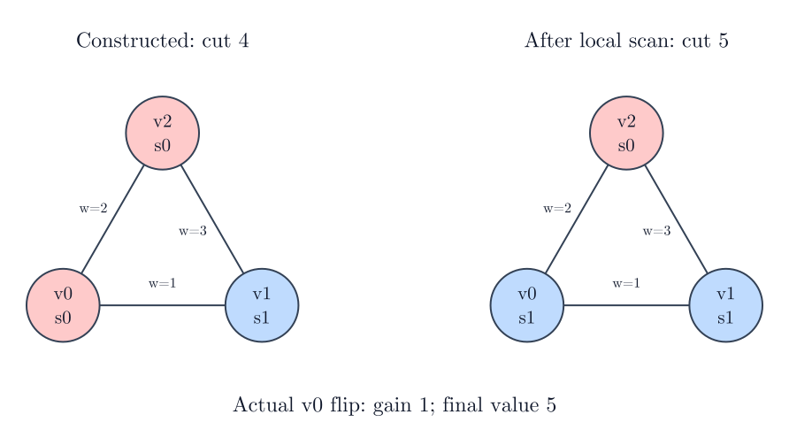
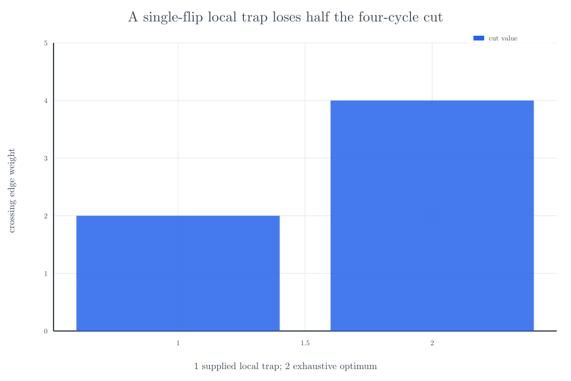
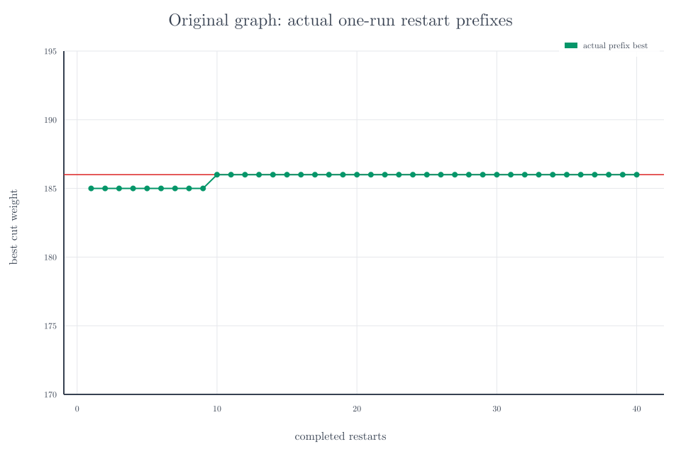
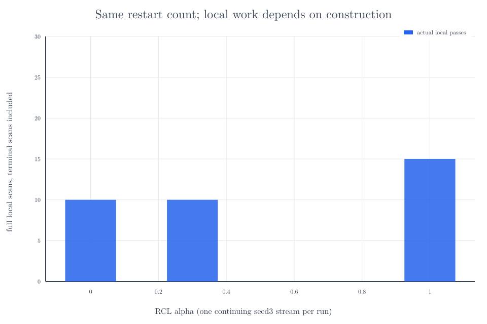

GRASP for MAX-CUT: construct, flip, retain the best
Abstract
Split a weighted graph's vertices into two sides to maximize the weight crossing between them. Greedy placement can miss useful configurations, and a partition that resists every single-vertex flip can still be globally poor. This report follows actual greedy-randomized construction and cyclic local improvement, then retains the best completed restart. A three-vertex example shows one improving flip, a four-cycle proves the gap between local and global optimality, and the original fourteen-vertex graph supplies an exhaustively checked reference. Actual histories replace repeated prefix reruns, while seed, tolerance, validation and resource policies bound what the results mean.
One actual improving flip
Use a triangle with weights w₀₁=1, w₀₂=2 and w₁₂=3. With alpha one and seed three, the native construction places sides (0,1,0), cutting weights one and three for value four. Its first local test flips vertex zero, changing the sides to (1,1,0). Edge 01 leaves the cut and edge 02 enters: the actual gain is −1+2=1, and the resulting cut has value five. A triangle cannot cut all three edges; isolating each vertex gives values three, four and five, so five is also the optimum.
#include <dm/dm.hpp>
int main() {
std::filesystem::create_directories("build");
const dm::algorithms::GraspAdjacency adj{{{1, 1}, {2, 2}}, {{0, 1}, {2, 3}},
{{0, 2}, {1, 3}}};
const auto t = dm::algorithms::grasp_max_cut_trace(3, adj, 1, 1, 3);
const auto &restart = t.restarts.at(0);
std::print("| step | candidate | gain side 0 | gain side 1 | in RCL | chosen | threshold |\n| ---: | " "---: | ---: | ---: | --- | --- | ---: |\n");
for (const auto &s : t.construction)
for (std::size_t i = 0; i < s.candidates.size(); ++i) {
const auto &c = s.candidates[i];
std::print("| {} | {} | {} | {} | {} | {} | {} |\n", s.step, c.vertex,
c.gain0, c.gain1, c.in_rcl, i == s.pick, s.threshold);
}
std::print("\n| pass | vertex | before side | computed gain | accepted |\n| ---: | ---: | ---: | ---: | " "--- |\n");
for (const auto &f : t.flips)
std::print("| {} | {} | {} | {} | {} |\n", f.pass, f.vertex,
f.before_side, f.delta, f.accepted);
const double constructed =
dm::algorithms::grasp_cut_check(adj, restart.constructed_side).value;
std::print("\nConstructed objective {} (separate check); producing final objective {}; accepted flips " "{}.\n",
constructed, restart.final_value, t.run.work.accepted_flips);
dm::graphics::Diagram d(75, 1100);
dm::graphics::DiagramNodeStyle style;
style.circle = true;
style.width = 1;
style.height = 1;
style.font_size = 21;
const std::vector<dm::graphics::DiagramPoint> positions{{0, 0}, {3, 0},
{1.5, 2.6}};
for (int phase = 0; phase < 2; ++phase) {
const auto &side =
phase ? restart.final_side : restart.constructed_side;
const double offset = phase ? 7. : 0.;
for (int v = 0; v < 3; ++v) {
style.fill =
side[v] ? dm::graphics::RGB{191, 219, 254}
: dm::graphics::RGB{254, 202, 202};
d.node(std::format("{}-{}", phase, v),
{positions[v].x + offset, positions[v].y},
std::format("v{}\ns{}", v, side[v]), style);
}
for (int u = 0; u < 3; ++u)
for (auto[v, w] : adj[u])
if (u < v)
d.link(std::format("{}-{}", phase, u),
std::format("{}-{}", phase, v),
std::format("w={}", w));
d.text({1.5 + offset, 4},
std::format("{}: cut {}",
phase ? "After local scan" : "Constructed",
phase ? restart.final_value : constructed), 24);
}
d.text({5, -1.5},
std::format("Actual v0 flip: gain {}; final value {}",
t.flips[0].delta, restart.final_value), 24).save_svg(
"build/grasp_tiny.svg");
if (restart.constructed_side != std::vector<int>{0, 1, 0} ||
restart.final_side != std::vector<int>{1, 1, 0} ||
restart.final_value != 5)
throw std::runtime_error("tiny actual phases");
}| step | candidate | gain side 0 | gain side 1 | in RCL | chosen | threshold |
|---|---|---|---|---|---|---|
| 0 | 0 | 0 | 0 | true | true | 0 |
| 0 | 1 | 0 | 0 | true | false | 0 |
| 0 | 2 | 0 | 0 | true | false | 0 |
| 1 | 1 | 0 | 1 | true | true | 1 |
| 1 | 2 | 0 | 2 | true | false | 1 |
| 2 | 2 | 3 | 2 | true | true | 3 |
| pass | vertex | before side | computed gain | accepted |
|---|---|---|---|---|
| 1 | 0 | 0 | 1 | true |
| 1 | 1 | 1 | -2 | false |
| 1 | 2 | 0 | -5 | false |
| 2 | 0 | 1 | -1 | false |
| 2 | 1 | 1 | -2 | false |
| 2 | 2 | 0 | -5 | false |
Constructed objective 4 (separate check); producing final objective 5; accepted flips 1.

Derive construction and the flip gain
For a symmetric loopless weighted graph, a partition s∈{0,1}ⁿ has objective
Signed, zero and parallel weights are supported. Input rows must contain reciprocal entries with matching weights and multiplicities, while their original order is retained for floating-point sums. Self-loops are rejected: treating a loop as an incident flip gain would be wrong, and the old code could flip such a vertex forever.
For each unassigned vertex v, construction computes g₀(v) and g₁(v) from edges to already assigned neighbors on the opposite side. Its candidate score is g(v)=max(g₀,g₁), with side zero winning exact side-score ties. Let gmax and gmin be the extreme candidate scores. The implemented restricted candidate list is
A single xorshift word modulo the RCL length chooses a candidate. Modulo reduction is generally biased. Alpha zero randomizes equal or nearly equal best candidates; it is not a deterministic single choice. Alpha one ideally admits all candidates, but the actual threshold is rounded. The first placement has no assigned neighbors, so every candidate initially ties at zero regardless of alpha. After each placement, remaining scores are recomputed, making construction adaptive.
For a complete partition, flipping v reverses each incident crossing indicator. The exact gain is
The native local phase scans vertices in ascending order and immediately accepts a computed gain greater than 10⁻¹². Later tests in the same pass see earlier flips. It repeats full scans until one accepts no flip. The terminal partition therefore passes all computed single-flip tolerance tests; it is not necessarily an exact-real local optimum, let alone a global one.
In exact arithmetic, every accepted positive move increases C on a finite partition space, so cycling is impossible. Rounded gains can disagree with a rounded objective difference, so that proof alone does not establish floating-point termination. A configurable per-restart pass cap includes the terminal no-flip scan; the default and legacy call use one million passes. Exhaustion throws rather than returning a falsely finished local search.
A local trap is not a global certificate
On an unweighted four-cycle, partition (0,0,1,1) cuts two edges. Every vertex has one crossing and one noncrossing incident edge, so every flip gain is exactly zero. Single-flip strict improvement stops there. Alternating sides cut all four edges. This is a diagnostic example of the neighborhood's limitation, not a claim that the preceding triangle run visited that partition.
#include <dm/dm.hpp>
int main() {
std::filesystem::create_directories("build");
const dm::algorithms::GraspAdjacency cycle{{{1, 1}, {3, 1}},
{{0, 1}, {2, 1}},
{{1, 1}, {3, 1}},
{{2, 1}, {0, 1}}};
const auto trap = dm::algorithms::grasp_cut_check(cycle, {0, 0, 1, 1});
const auto exact = dm::algorithms::grasp_exact_max_cut(cycle);
std::print("| vertex | supplied-cut flip gain |\n| ---: | ---: |\n");
for (std::size_t v = 0; v < trap.flip_gains.size(); ++v)
std::print("| {} | {} |\n", v, trap.flip_gains[v]);
std::print("\nSupplied cut {}; computed tolerance-local {}; exhaustive best {}; complement classes " "examined {}.\n",
trap.value, trap.tolerance_local, exact.result.value,
exact.partitions);
auto p = dm::graphics::RPlot::create();
p.bars({1, 2}, {trap.value, exact.result.value}, "cut value", {37, 99, 235}).title("A single-flip local trap loses half the four-cycle cut").x_label("1 supplied local trap; 2 exhaustive optimum").y_label("crossing edge weight").y_limits(0, 5).save_svg("build/grasp_local_trap.svg");
if (trap.value != 2 || !trap.tolerance_local || exact.result.value != 4)
throw std::runtime_error("local trap");
}| vertex | supplied-cut flip gain |
|---|---|
| 0 | 0 |
| 1 | 0 |
| 2 | 0 |
| 3 | 0 |
Supplied cut 2; computed tolerance-local true; exhaustive best 4; complement classes examined 8.

Preserve the original fourteen-vertex instance
The native fixture retains the original xorshift seed12345, edge-presence modulo two and integer weights one through nine. It has fourteen vertices and fifty undirected edges. The exact helper fixes vertex zero to one side, enumerating 8192 complement classes instead of both orientations of every partition. All objective sums here are small exact integers, so the exhaustive comparison has no floating ambiguity.
One hundred actual restarts with alpha0.3 and seed1 replace the old repeated calls for budgets1 through40. Their summaries contain the producing local result and best-so-far value. The figure uses the first forty summaries from this single run. Monotonic best-so-far retention is guaranteed; a rising curve or a hit on the optimum is not guaranteed for every instance or seed. A flat curve may mean the first restart already found the optimum.
#include <dm/dm.hpp>
int main() {
std::filesystem::create_directories("build");
const auto adj = dm::algorithms::grasp_demo_graph();
const auto exact = dm::algorithms::grasp_exact_max_cut(adj);
const auto t = dm::algorithms::grasp_max_cut_trace(14, adj, 100, .3, 1);
std::size_t entries = 0;
for (const auto &row : adj)
entries += row.size();
std::print("Original vertices {}; undirected edges {}; GRASP best {}; exhaustive best {}; examined " "complement classes {}.\n\n",
adj.size(), entries / 2, t.run.result.value, exact.result.value,
exact.partitions);
std::print("| restart | local final value | actual prefix best | improved retained best |\n| ---: | " "---: | ---: | --- |\n");
std::vector<double> x, y;
for (std::size_t i = 0; i < 40; ++i) {
const auto &r = t.restarts[i];
x.push_back(i + 1);
y.push_back(r.best_value);
std::print("| {} | {} | {} | {} |\n", i + 1, r.final_value,
r.best_value, r.improved_best);
if (i && y[i] < y[i - 1])
throw std::runtime_error("best prefix");
}
auto p = dm::graphics::RPlot::create();
p.line(x, y, "actual prefix best", {5, 150, 105}, 2).points(x, y, "",
{5, 150, 105}, 4).abline_h(exact.result.value, {220, 38, 38}, 1.5).title("Original graph: actual one-run restart prefixes").x_label("completed restarts").y_label("best cut weight").y_limits(170, 195).save_svg("build/grasp_original.svg");
if (exact.result.value != 186 || t.run.result.value != 186 ||
entries / 2 != 50)
throw std::runtime_error("original fixture");
}Original vertices 14; undirected edges 50; GRASP best 186; exhaustive best 186; examined complement classes 8192.
| restart | local final value | actual prefix best | improved retained best |
|---|---|---|---|
| 1 | 185 | 185 | true |
| 2 | 185 | 185 | false |
| 3 | 174 | 185 | false |
| 4 | 173 | 185 | false |
| 5 | 185 | 185 | false |
| 6 | 185 | 185 | false |
| 7 | 173 | 185 | false |
| 8 | 185 | 185 | false |
| 9 | 180 | 185 | false |
| 10 | 186 | 186 | true |
| 11 | 185 | 186 | false |
| 12 | 180 | 186 | false |
| 13 | 185 | 186 | false |
| 14 | 185 | 186 | false |
| 15 | 185 | 186 | false |
| 16 | 186 | 186 | false |
| 17 | 185 | 186 | false |
| 18 | 185 | 186 | false |
| 19 | 185 | 186 | false |
| 20 | 185 | 186 | false |
| 21 | 185 | 186 | false |
| 22 | 185 | 186 | false |
| 23 | 185 | 186 | false |
| 24 | 180 | 186 | false |
| 25 | 173 | 186 | false |
| 26 | 185 | 186 | false |
| 27 | 185 | 186 | false |
| 28 | 185 | 186 | false |
| 29 | 185 | 186 | false |
| 30 | 185 | 186 | false |
| 31 | 185 | 186 | false |
| 32 | 185 | 186 | false |
| 33 | 185 | 186 | false |
| 34 | 185 | 186 | false |
| 35 | 185 | 186 | false |
| 36 | 185 | 186 | false |
| 37 | 173 | 186 | false |
| 38 | 185 | 186 | false |
| 39 | 185 | 186 | false |
| 40 | 185 | 186 | false |

Count the actual work and random stream
Let T be restarts, n vertices, A directed adjacency entries and L the total full local passes across restarts. Construction examines all still-unassigned vertices at each placement, giving
Here S is candidate scores, R membership tests, W RNG words and F flip tests. Construction neighbor inspections depend on when vertices are assigned and are bounded by TnA. Overall selected loop work is O(T(n²+nA)+LA), plus reciprocal validation O(A log A+n). Local passes are not assumed constant or polynomial in graph size. These counts exclude validation, allocation, snapshots and CPU instructions.
The trace admits one record per construction step, one per actual candidate, one per flip test, and one per restart plus its 2n copied partition labels. Its logical entry count is
These mixed logical units are not individual scalar fields, bytes, capacities or peak RAM. Known restart snapshot units are admitted before its construction, then actual construction and flip units online before their score or delta work. Histories are owned and copy independently. Scalar/work-only calls retain no optional history.
#include <dm/dm.hpp>
int main() {
std::filesystem::create_directories("build");
const dm::algorithms::GraspAdjacency adj{{{1, 1}, {2, 2}}, {{0, 1}, {2, 3}},
{{0, 2}, {1, 3}}};
std::print("| alpha | candidate scores | membership tests | RNG words | local passes | flip tests | " "construction visits | local visits | captured entries |\n| ---: | ---: | ---: | ---: | ---: " "| ---: | ---: | ---: | ---: |\n");
std::vector<double> x, passes;
for (double alpha : {0., .3, 1.}) {
const auto t =
dm::algorithms::grasp_max_cut_trace(3, adj, 10, alpha, 3);
const auto &w = t.run.work;
const std::size_t expected =
10 * (1 + 3 * 3 + 3 * 4 / 2) + 3 * w.local_passes;
if (w.candidate_scores != 60 || w.rcl_tests != 60 ||
w.rng_words != 30 || w.flip_tests != 3 * w.local_passes ||
w.local_neighbors != 6 * w.local_passes ||
w.objective_neighbors != 60 || t.captured_entries != expected)
throw std::runtime_error("work identities");
std::print("| {} | {} | {} | {} | {} | {} | {} | {} | {} |\n", alpha,
w.candidate_scores, w.rcl_tests, w.rng_words, w.local_passes,
w.flip_tests, w.construction_neighbors, w.local_neighbors,
t.captured_entries);
x.push_back(alpha);
passes.push_back(w.local_passes);
}
const auto t = dm::algorithms::grasp_max_cut_trace(3, adj, 1, 1, 3);
bool quota = false, passcap = false, loop = false;
dm::algorithms::GraspOptions o;
o.max_trace_entries = t.captured_entries - 1;
try {
(void) dm::algorithms::grasp_max_cut_trace(3, adj, 1, 1, 3, o);
} catch (const std::length_error &) {
quota = true;
}
o.max_trace_entries = t.captured_entries;
const auto exact = dm::algorithms::grasp_max_cut_trace(3, adj, 1, 1, 3, o);
o.max_local_passes = 1;
try {
(void) dm::algorithms::grasp_max_cut_run(3, adj, 1, 1, 3, o);
} catch (const std::length_error &) {
passcap = true;
}
try {
(void) dm::algorithms::grasp_max_cut(1, {{{0, 1}}});
} catch (const std::invalid_argument &) {
loop = true;
}
std::print("\nOne-short capture cap rejects: {}; exact cap retains {} entries; a one-pass budget " "rejects unfinished improvement: {}; self-loop rejected: {}.\n",
quota, exact.captured_entries, passcap, loop);
auto p = dm::graphics::RPlot::create();
p.bars(x, passes, "actual local passes", {37, 99, 235}, .15).title(
"Same restart count; local work depends on construction").x_label(
"RCL alpha (one continuing seed3 stream per run)").y_label(
"full local scans, terminal scans included").y_limits(0, 30).save_svg(
"build/grasp_work.svg");
if (!quota || !passcap || !loop)
throw std::runtime_error("resource controls");
}| alpha | candidate scores | membership tests | RNG words | local passes | flip tests | construction visits | local visits | captured entries |
|---|---|---|---|---|---|---|---|---|
| 0 | 60 | 60 | 30 | 10 | 30 | 120 | 60 | 190 |
| 0.3 | 60 | 60 | 30 | 10 | 30 | 120 | 60 | 190 |
| 1 | 60 | 60 | 30 | 15 | 45 | 120 | 90 | 205 |
One-short capture cap rejects: true; exact cap retains 22 entries; a one-pass budget rejects unfinished improvement: true; self-loop rejected: true.

A seed initializes one continuing xorshift stream, not independent fresh seeds per restart. Repeating a larger restart budget with the same input, seed and options has the same earlier prefix; this property is checked separately. Modulo bias, ties and the absolute slacks make general success-probability claims inappropriate. Independent restarts can be a modeling assumption in analysis, but are not a proved statistical property of this finite deterministic generator.
Basic validation rejects negative or mismatched n, invalid endpoints, loops, nonfinite weights, nonpositive restart counts and alpha outside finite [0,1], before input caps. Reciprocal weights and multiplicities are checked after complete input caps and before search; duplicates retain their original order. Default complete caps are one million vertices and directed entries, each zero disabling it. The legacy call has no input/capture policy cap but retains the per-restart pass guard. New options can disable that guard with zero, which removes its floating termination protection. Nonfinite accumulated scores, cutoff ranges, deltas or objectives throw. Failures return no partial result/history, and floating flags already raised are not rolled back.
The bounded exhaustive helper is a verification tool, with a hard 24-vertex limit and a default one-million complement-class cap checked before enumeration. Exact means all partitions are considered, not exact arithmetic for arbitrary floating weights. The integer fixtures here avoid that ambiguity. Empty graphs return value zero; signed and parallel finite weights are otherwise supported under the validated graph contract.
What this run establishes
The tiny trace shows adaptive construction followed by an actual immediate improving flip. The four-cycle shows why a single-flip stopping test does not certify a global optimum. The original graph reaches its exhaustive reference in this run, and prefix retention is monotone by construction. None of that establishes reliable optimality for unseen graphs, a universal benefit from a particular alpha, or a runtime guarantee for local search. Controlled synthetic instances fit these questions without forcing an unrelated dataset.
The primary reference is T. A. Feo and M. G. C. Resende, [Greedy Randomized Adaptive Search Procedures](https://doi.org/10.1007/BF01096763) (1995), with an [author-hosted copy](https://mauricio.resende.info/doc/gtut.pdf). Its generic construction/local-search/incumbent framework motivates this variant. The specific weighted scoring, cyclic immediate flips, decision slacks, RNG stream and resource guards are this library's implementation policy.
Verification compares legacy valid outputs with a frozen pre-conversion implementation, reconstructs actual RCL scores, RNG states, immediate flips, prefix incumbents and selected work, and uses independent exhaustive masks for small signed graphs. Original-graph enumeration, malformed input, loop termination, quota, pass-cap, overflow and ownership checks accompany sanitizer runs. Complete report programs, figures, API examples and HTML/Markdown exports are checked before the legacy files are retired.